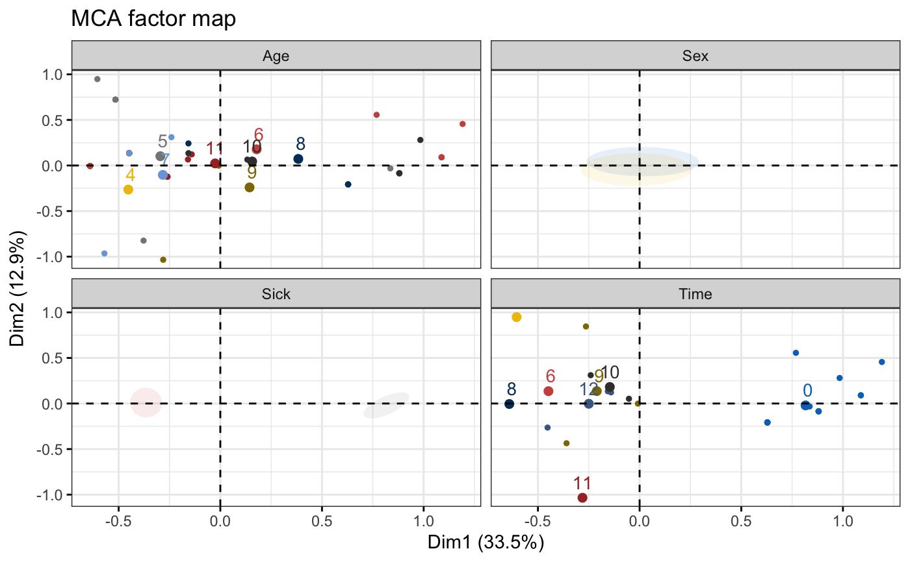

fviz_ellipses.RdDraw confidence ellipses around the categories
fviz_ellipses(X, habillage, axes = c(1, 2), addEllipses = TRUE, ellipse.type = "confidence", palette = NULL, pointsize = 1, geom = c("point", "text"), ggtheme = theme_bw(), ...)
| X | an object of class MCA, PCA or MFA. |
|---|---|
| habillage | a numeric vector of indexes of variables or a character vector of names of variables. Can be also a data frame containing grouping variables. |
| axes | a numeric vector specifying the axes of interest. Default values are 1:2 for axes 1 and 2. |
| addEllipses | logical value. If TRUE, draws ellipses around the individuals when habillage != "none". |
| ellipse.type | Character specifying frame type. Possible values are
|
| palette | the color palette to be used for coloring or filling by groups. Allowed values include "grey" for grey color palettes; brewer palettes e.g. "RdBu", "Blues", ...; or custom color palette e.g. c("blue", "red"); and scientific journal palettes from ggsci R package, e.g.: "npg", "aaas", "lancet", "jco", "ucscgb", "uchicago", "simpsons" and "rickandmorty". Can be also a numeric vector of length(groups); in this case a basic color palette is created using the function palette. |
| pointsize | the size of points |
| geom | a text specifying the geometry to be used for the graph. Allowed values are the combination of c("point", "text"). Use "point" (to show only points); "text" to show only labels; c("point", "text") to show both types. |
| ggtheme | function, ggplot2 theme name. Default value is theme_pubr(). Allowed values include ggplot2 official themes: theme_gray(), theme_bw(), theme_minimal(), theme_classic(), theme_void(), .... |
| ... | Arguments to be passed to the functions ggpubr::ggscatter() & ggpubr::ggpar(). |
a ggplot
# \donttest{ # Multiple Correspondence Analysis # +++++++++++++++++++++++++++++++++ library(FactoMineR) data(poison) res.mca <- MCA(poison, quanti.sup = 1:2, quali.sup = 3:4, graph=FALSE) fviz_ellipses(res.mca, 1:4, geom = "point", palette = "jco")#> Warning: production de NaN#> Warning: production de NaN#> Warning: production de NaN#> Warning: production de NaN#> Warning: production de NaN#> Warning: production de NaN#> Warning: production de NaN#> Warning: production de NaN#> Warning: production de NaN#> Warning: production de NaN#> Warning: production de NaN#> Warning: production de NaN#> Warning: production de NaN#> Warning: production de NaN#> Warning: production de NaN#> Warning: production de NaN#> Warning: production de NaN#> Warning: production de NaN#> Warning: production de NaN#> Warning: production de NaN#> Warning: production de NaN#> Warning: production de NaN#> Warning: production de NaN#> Warning: production de NaN#> Warning: production de NaN#> Warning: production de NaN#> Warning: production de NaN#> Warning: production de NaN#> Warning: production de NaN#> Warning: production de NaN#> Warning: production de NaN#> Warning: production de NaN#> Warning: Computation failed in `stat_conf_ellipse()`: #> valeur manquante là où TRUE / FALSE est requis#> Warning: Computation failed in `stat_conf_ellipse()`: #> valeur manquante là où TRUE / FALSE est requis#> Warning: This manual palette can handle a maximum of 10 values. You have supplied 32.#> Warning: Removed 144 rows containing missing values (geom_point).#> Warning: Removed 22 rows containing missing values (geom_point).# }